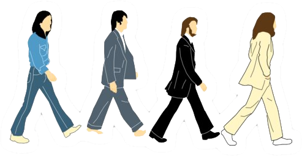

Feliz Natal!
Hey Bia!
"As palavras que transmitem conhecimento são mais valiosas que grandes quantidades de ouro e rubis."
Merry Christmas & Happy New Year com a Graça de Deus! Biazinha, hehe, lhe admiro pelo seu empenho na área acadêmica (Quando sai o PHD? hehe), que Deus lhe abençoe com inteligência e sabedoria, e que suas palavras venham transmitir mais que o conhecimento científico, as Palavras da Vida Eterna.